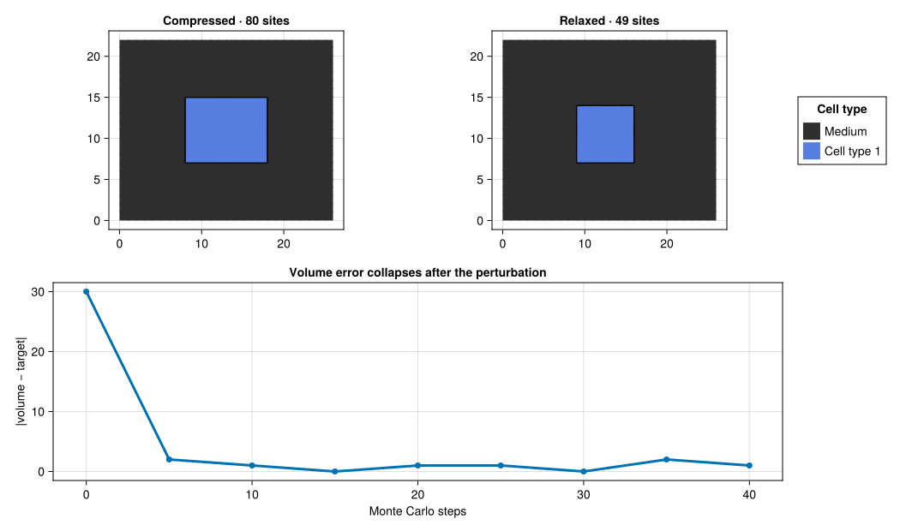
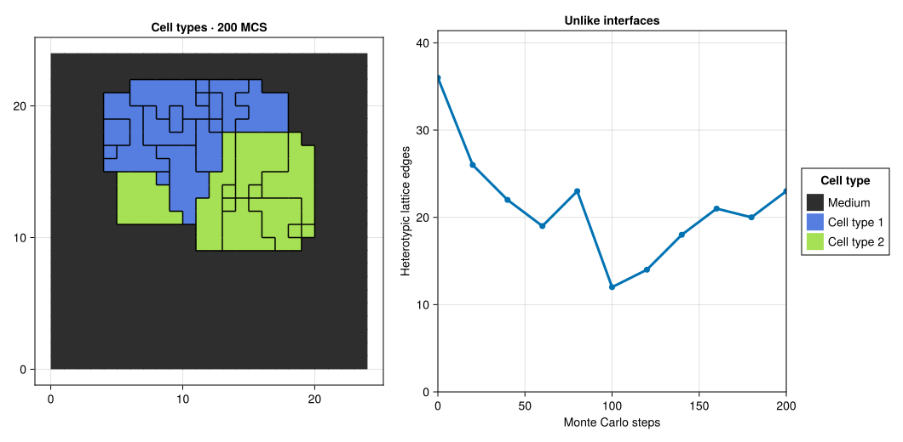
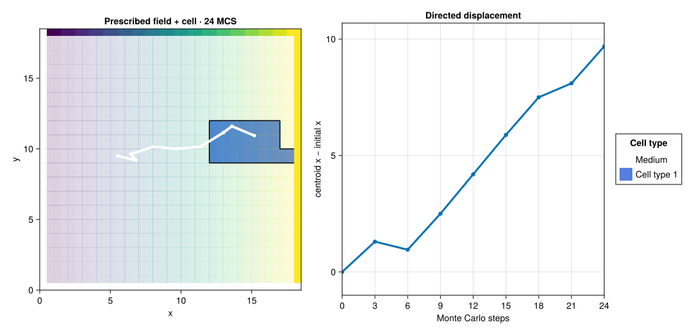
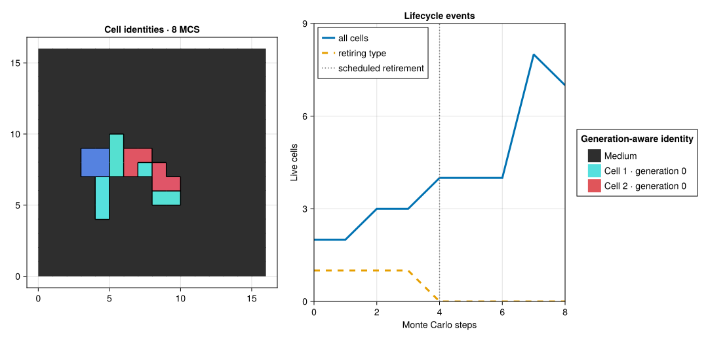
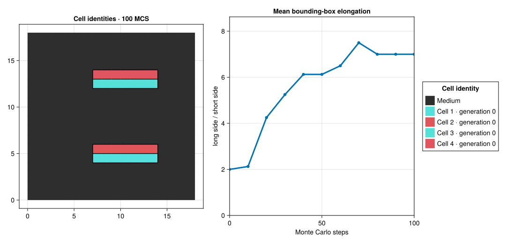
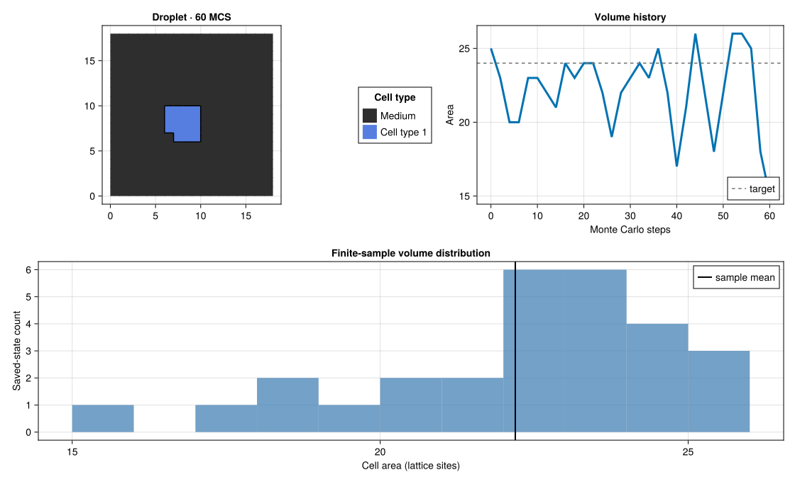
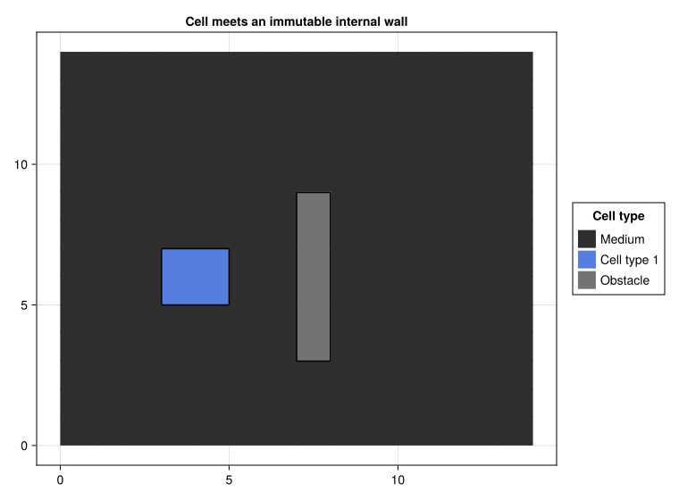
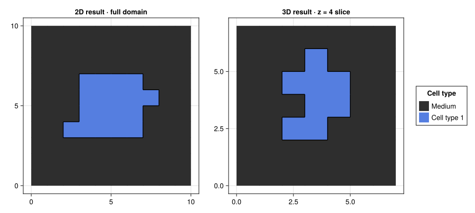
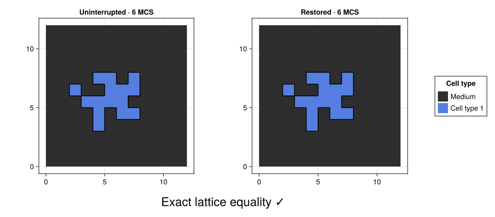
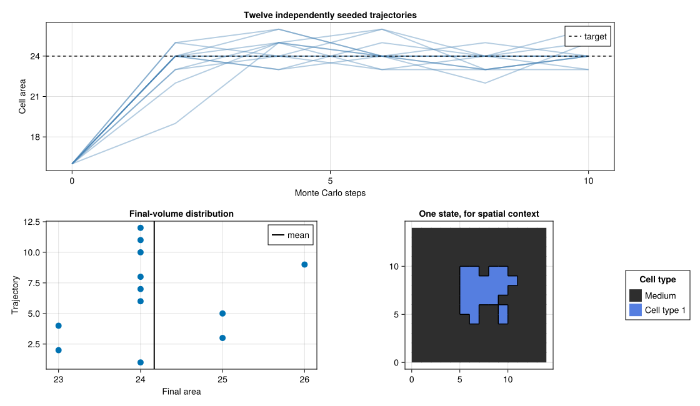

See what the engine can do
These are complete, deterministic PottsToolkit programs—not screenshots of private scripts. Every page exposes the model declarations, simulation setup, quantitative contract, and native MakiePotts visualization.

A compressed cell relaxes
Connect geometry to a preferred-volume energy.
before/after + volume error
Two populations sort
Watch costly heterotypic interfaces reorganize.
animation + contact statistic
A cell follows a gradient
See the prescribed field, path, and directed displacement.
animation + trajectory
Grow, divide, retire
Combine property growth, division, and scheduled death.
animation + population history
Acquire elongated shapes
Compose elongation, adhesion, and connectivity.
animation + morphology trace
Sample a fluctuating droplet
Put mechanical noise, history, and distribution together.
shape + trace + histogram
Meet boundaries and obstacles
Distinguish closed faces from immutable internal sites.
semantic owners + exact assertion
Reuse one model in 2D and 3D
Separate biological declarations from realized geometry.
full frame + explicit slice
Stop and resume exactly
Prove logical-state equality after checkpoint restore.
side-by-side + exact equality
Expose ensemble variability
Derive semantic seeds and retain every trajectory.
replicates + distributionChoose by scientific question
| If you want to understand… | Start with… |
|---|---|
| energetic relaxation | A compressed cell relaxes |
| differential adhesion and sorting | Two populations reduce unlike contacts |
| prescribed fields and directed motion | A cell follows a prescribed gradient |
| lifecycle rules and generation-aware identity | Cells grow, divide, and retire |
| elongation and connectivity constraints | Cells acquire elongated, connected shapes |
| noisy mechanics and distributional analysis | A droplet fluctuates |
| ownership boundaries and obstacles | Closed boundaries and immutable obstacles |
| dimension-generic authoring | One model, two and three dimensions |
| exact persistence | Stop and resume |
| deterministic ensemble seeding | A reproducible ensemble |
The examples make bounded claims about pinned trajectories. Published-model reproduction and scientific qualification require the separate evidence contracts described under Scientific guarantees.